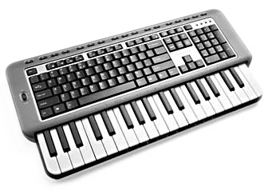
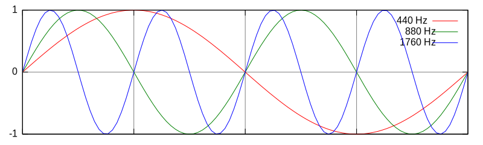
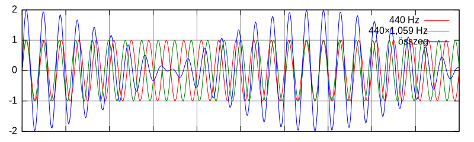
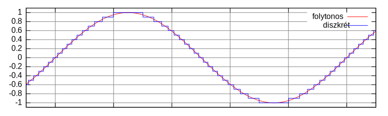

Adventi naptár
Boci boci tarka
Most egy újabb trilógia következik, ezúttal a hangokról.
A mai feladat: állítsunk elő hangot! Rajzolja ki a program egy zongora billentyűit. Az egy oktávos billentyű gombjait a számítógép billentyűzetéről lehessen megnyomni. A billentyűzet qwerty sora a fehér, a 23567 sora pedig a fekete billentyűknek feleljenek meg.
1A hangok természete
Eddig hangról nem volt szó még itt az adventi naptárban sem. Ez nem azt jelenti, hogy nagyon bonyolult dologról lenne szó – legalábbis az alapjai nem bonyolultak sem fizikailag, sem programozási szempontból. Az SDL-ben ez is nagyon egyszerűen meg van oldva: ha jelezzük egy-két függvényhívással, hogy hangot szeretnénk megszólaltatni, kapunk egy puffert, egy tömböt, ahova a hangot meghatározó adatokat kell írni. Minden alkalommal, amikor az adatok elfogynak, az SDL meghívja az általunk megadott függvényt, amelynek az a feladata, hogy az újabb adag adatot előállítsa, azzal feltöltse a puffert – és ennyi, már szól is a hang. A kérdés csak az, hogy mivel kell ezt a tömböt feltölteni, hogy ne csak zajt halljunk.
A hang fizikailag valamilyen közeg, egy tárgy vagy a levegő rezgése. Levegő esetén a légnyomás növekedéséről és csökkenéséről, azaz a levegő sűrűsödéséről és ritkulásáról van szó, amelyet a fülünk érzékel. A légnyomásváltozások mértéke adja a hang erősségét, az időbeli változásuk sebessége pedig a hang magasságát.
Egy hang felvételekor ezeket a sűrűsödéseket-ritkulásokat kell rögzíteni elektromos úton egy mikrofonnal. Lejátszásakor fordított irányban történik ugyanez, egy hangszóró mozgatja meg ugyanolyan ütemben a levegőt, ahogyan az eredetileg is történt. Itt egy létező hang rögzítéséről van szó, ahogyan egy fényképezőgép is egy létező képet rögzít. Megfelelő feszültség-idő függvény előállításával azonban szintetizálni is tudunk hangot (ahogyan a „semmiből” képet is állíthatunk elő a programunkban).
A matematikailag legegyszerűbb periodikus függvény a szinusz. A fentiek alapján egy szinuszos
légnyomásváltozás amplitúdója határozza meg a hallott hang erősségét, frekvenciája pedig a
magasságát. A zenei A hangnak a 440 Hz-es rezgés felel meg. Ez így hangzik:
A gyorsabb rezgéseket magasabb hangnak, a lassabb rezgéseket pedig alacsonyabb hangnak halljuk. A
440×2 = 880 Hz-es hangra azt mondjuk, hogy egy oktávval magasabban van, mint a
440 Hz-es:
A következő ilyen hangköz azonban nem a
440×3 = 1320 Hz:
Hanem a
440×4 = 440×2×2 = 1760 Hz-es:
Az összes emberi érzékszervhez hasonlóan a fül hangmagasság-érzékelése is logaritmikus: mindig az előző hanghoz képest kétszeres frekvenciájút hallunk ugyanakkora (itt: oktáv) hangköznek. Ez talán annyira nem meglepő, hiszen az ábrán láthatóan az
1760 Hz viszonyul úgy a
880-hoz, mint a
880 a 440-hez: hogy egy egész periódus fér be abba az időbe a nagyobbiknál, mint amekkorába a
kisebbiknél csak egy fél.

Az egy oktávos hangközt a zenében a legtöbbször tizenkét félhangra bontjuk. Az
egyes hangközök között a fentiek alapján frekvenciában nem az összeadás, hanem a szorzás teremti
meg a kapcsolatot. Ez egy mértani sorozat: a szomszédos, eggyel magasabb félhangra mindig
egy szorzással tudunk tovább jutni: a szorzó tényező pedig 12√2
kell legyen, mivel ennek a tizenkettedik hatványa a kettő, és tizenként félhang az oktáv. Ezeket
a félhangokat jelöljük a zenében a C, C#, D, D#, E, F, F#, G, G#, A, A#, H betűkkel (ahol az A
a 440 Hz-es). A hangszerek jelentős részén ezek meg is találhatóak. Például a zongora minden
billentyűjének egy ilyen hang felel meg, a gitár minden bundjánál lefogva egy húrt úgy rövidíthető
meg annak a hossza, hogy a megfelelő rezgésszámot produkálja. Más hangszereknél nincsen ilyen
segítség, egy hegedűnél a zenésznek kell tudnia, hogy hol fogja le a húrt. A harsonánál is
hasonló a helyzet: a zenész „lövi be” fülre, hogy milyen hosszúra kell nyújtania a csövet a
kihúzásával, hogy a megfelelő frekvenciájú rezgés keletkezzen benne. Ez jó hallás és gyakorlás
kérdése.
Tegyük fel, hogy két forrásból hallunk hangot. Ilyenkor a két forrás által keltett hangnyomás
egyszerűen összeadódik. Ha az egyik hang az A (piros, 440 Hz), a másik hang az A#
(zöld 440×12√2 ≈ 440×1,059 Hz), egy
ilyen függvény (kék) adódik:

Látható, hogy a kis frekvenciakülönbség miatt a két hang néha erősíti egymást (amikor
mindkettő ép növekszik, azaz fázisban vannak), máskor meg gyengítik egymást (amikor
egyik nő, másik csökken, ellentétes fázisban vannak). Az erősítés-gyengítésnek is van
egy periodicitása, ami matematikailag is kifejezhető a sin x + sin y-ból:
x+y x-y
sin x + sin y = 2 sin --- cos ---
2 2
Ebben megjelenik a két frekvencia különbsége szorzóként, amely a fenti példában
0,059×440 = 25,96 Hz. Ezt a jelenséget lebegésnek hívják. Ezt egy vibrálásnak érzékeljük, ami
nem túl kellemes a fül számára. A két hang disszonáns, nem szól jól együtt. Ha kellően nagy a frekvenciák
különbsége, akkor nem hallunk ilyesmit.
Adódik itt azonban egy kis probléma. A
12√2 szám irracionális. Mozduljunk el egy alaphangtól
hétszer fél hanggal, azaz egy kvinttel. Vegyük tehát a szorzó hetedik
hatványát: (12√2)7≈1,49831, ami
majdnem 1,5, de nem pontosan annyi. Két ilyen hang összege is, alig hallhatóan ugyan, de lebeg.
Viszont ha az 1,49831-es szorzó helyett inkább 1,5-et használunk, azaz egy tiszta hangközt,
nem történik ilyen. Hasonló a helyzet a nagy tercnél, négy félhang távolságnál: a szorzó
(12√2)4≈1,2599, ami helyett meg
szebb hangzású a pontosan 1,25, azaz 5/4-del helyettesített tiszta hangköz.
A tiszta és az egyenletes hangközök közötti különbség
hallatszik kicsit. Alább két szinuszokból szintetizált akkord (több hang együtt), amelyben
a C, E, és G betűkkel jelölt hangok szólalnak meg egyszerre. Az egyenletesen temperált,
azaz 12√2 hatványait használó hangoknál
az akkord kicsit lebeg, míg a tiszta hangközöknél (4/3 és 3/2) nem. Ha nem hallatszik,
próbáld fejhallgatóval!
C, E, G – egyenletes hangközökkel
C, E, G – tiszta hangközökkel
Ebből adódik a hangszerek hangolásának az alapproblémája. Ha meg szeretnénk szüntetni a lebegést,
akkor a (12√2)n hatványsor minden
számát egy hozzá közel álló racionális számmal kell helyettesíteni, pl. az n=7-ediket 3/2-del
(1,49831≈3/2=1,5), vagy az n=5-ödiket 4/3-dal
(1,3348≈4/3=1,3333).
Ha így teszünk, akkor viszont nem lesz az igaz például az,
hogy 12 kvint (12×7) 7 oktávot (7×12) ad, mert 1,512, a 12 kvint frekvenciaszorzója
129,74634, míg a 7 oktávé csak 27=128.
Az évszázadok alatt sok mindennel próbálkoztak ennek a problémának a megoldására. Manapság
leginkább maradunk az irracionális arányoknál, azaz a 12√2
hatványainál. Ez az egyenletesen temperált hangolás. Ebben minden félhang
között pontosan ugyanakkora különbség van, szemben azzal, mintha a fenti módon, kis egész számok
hányadosával, racionális számokkal helyettesítenénk ezeket. Az egyenletes közök előnyösek:
ezek teszik lehetővé azt, hogy egy zenedarabot transzponáljunk, azaz valahány hanggal magasabban
játsszunk el, anélkül, hogy a jellege nagyon megváltozna.
Ennyit a frekvenciákról és a hangközökről. Ez csak azért kellett, hogy érthetőek
legyenek a programba beírt számok, 1/12-edik hatványok. A programban ugyanis a billentyűkhöz egy
frekvenciát rendelünk, amilyen rezgésszámú szinuszt meg kell szólaltatni az adott billentyű
nyomva tartásakor.
typedef struct Hang {
SDLKey sym; /* billentyuje */
double frek; /* a frekvenciaja */
double hangero; /* a hangero, 0->1 és 1->0 valtoztatva, hogy ne pattogjon */
int szol; /* epp szol-e */
} Hang;
Hang hangok[] = {
{ SDLK_q, 440.0 * pow(2, -9 * 1.0/12.0) }, /* C */
{ SDLK_2, 440.0 * pow(2, -8 * 1.0/12.0) }, /* C# */
{ SDLK_w, 440.0 * pow(2, -7 * 1.0/12.0) }, /* D */
{ SDLK_3, 440.0 * pow(2, -6 * 1.0/12.0) }, /* D# */
{ SDLK_e, 440.0 * pow(2, -5 * 1.0/12.0) }, /* E */
{ SDLK_r, 440.0 * pow(2, -4 * 1.0/12.0) }, /* F */
{ SDLK_5, 440.0 * pow(2, -3 * 1.0/12.0) }, /* F# */
{ SDLK_t, 440.0 * pow(2, -2 * 1.0/12.0) }, /* G */
{ SDLK_6, 440.0 * pow(2, -1 * 1.0/12.0) }, /* G# */
{ SDLK_y, 440.0 * pow(2, 0 * 1.0/12.0) }, /* A */
{ SDLK_7, 440.0 * pow(2, 1 * 1.0/12.0) }, /* A# */
{ SDLK_u, 440.0 * pow(2, 2 * 1.0/12.0) }, /* H */
{ SDLK_i, 440.0 * pow(2, 3 * 1.0/12.0) }, /* C' */
{ SDLK_UNKNOWN } /* tomb veget jeloli */
};
2A program működése
A számítógépen nem tudunk időben folytonos jeleket feldolgozni. Mindig van egy legkisebb idő; illetve mindig van egy legkisebb jelváltozás is. Ez nincs másképp a hangoknál sem. Egy hang felvételekor nem a folytonos függvényt tároljuk, hanem egy másodpercben több ezer mintát veszünk belőle, és nem valós, hanem egész számokat tárolunk. 
Ha túl alacsony a másodpercenkénti mintavételek száma (vagyis túl sok az elhanyagolás az x tengely mentén), akkor a visszaállított hang tompa lesz. Ha pedig a mintákat pontatlanul tároljuk, akkor zajos, sercegős hangot kapunk. A CD minőség másodpercenként 44100 darab mintát jelent, a DVD minőség ennél még egy kicsit többet, 48000-et. A programban 44100 Hz-es mintavételezésű hangot fogunk előállítani, 16 bites értékekkel. Csatornánk csak egy lesz: a hang nem sztereó, nincs külön hang a bal és a jobb fül számára, hanem csak monó.
Az SDL-ben a SDL_OpenAudio() függvénnyel lehet elindítani a hanglejátszást.
Ennek egy SDL_AudioSpec struktúrában kell megadni a keltett hang paramétereit:
void hang_init(void *userdata) {
audiospec.freq = 44100; /* 44100Hz - CD minoseg, 48000 - dvd minoseg */
audiospec.format = AUDIO_S16SYS; /* 16-bit elojeles; a rendszer bajtsorrendjevel */
audiospec.channels = 1; /* mono */
audiospec.samples = audiospec.freq/50; /* puffer merete - 1/50 sec */
audiospec.callback = hang_callback; /* sdl hivja, ha ujabb adag hang kell neki */
audiospec.userdata = userdata; /* egy pointert atad mindig a callbacknek */
if (SDL_OpenAudio(&audiospec, NULL) < 0) {
fprintf(stderr, "Hiba a hanggal: %s\n", SDL_GetError());
exit(1);
}
}
Meg kell adni egy pufferméretet is, ez a programban 1/50 másodpercnyi hang. Ez
azt jelenti, hogy ekkora adatmennyiséget vár az SDL. Ha elfogy lejátszás közben az adat, akkor a
megadott függvényt meghívja (ez a hang_callback() függvény). Ennek a dolga, hogy a
következő pufferméretnyi hanganyagot előállítsa.
A hang kiszámításának menete nagyon egyszerű. Először is, tudni kell, hogy mennyi az idő. A
t változó tárolja a programban az időt. Ezt minden minta kiszámolása után meg kell
növelni dt-vel, amit pedig abból lehet kiszámolni, hogy mekkora részét teszi ki egy
másodpercnek egy hangminta:
double dt = 1.0/audiospec.freq; /* ennyi masodperc hangmintankent */ t += dt;A
hang_callback() függvény kiszámolja a hangok adott pillanatbeli
értékét a szokásos sin ωt képlet alapján, ahol ω a hang körfrekvenciája (ω = 2πf, mert
a szinusz függvény 2π alatt tesz meg egy periódust):
s_ez = sin(hangok[i].frek * 2 * 3.14159265 * t);
Az egyes hangokhoz tartozó mintát a hangerejükkel megszorozva kell hozzáadni az összesített értékhez. Ezáltal a többféle hang összemixelődik több gomb nyomva tartása esetén:
s += s_ez * hangero * hangok[i].hangero;
Egy dologra kell még figyelni: a hangok ki- és bekapcsolásuk pillanatakor nem szabad azonnal megváltoztatni a hangerejüket nulláról maximálisra, mert különben zavaró recsegést, pattanást fogunk hallgatni (click). Ezért a gomb megnyomásakor a program nem hirtelen, 40 mintányi idő alatt növeli maximálisra a hangerőt (1/0.025 lépésben), gomb elengedésekor pedig a hangerő ugyanígy csökken:
double const hangositas = 0.025;
if (hangok[i].szol) {
if (hangok[i].hangero < 1)
hangok[i].hangero += hangositas;
} else {
if (hangok[i].hangero < hangositas)
hangok[i].hangero = 0;
if (hangok[i].hangero > 0)
hangok[i].hangero -= hangositas;
}
3A program
A forráskód letölthető innen: advent21-bociboci.c. Szükséges hozzá az SDL használata, amelyhez az útmutató az Érdekességek menüpont alatt megtalálható.
Az y helyén a program működik a z gombbal is, zenei A hangot keltve, hogy magyar billentyűzeten is jó legyen. Teszt bemenet: qeqett qeqett iuztrz trewqq. Adventi hangulathoz pedig: wuytw ww wuyte :D